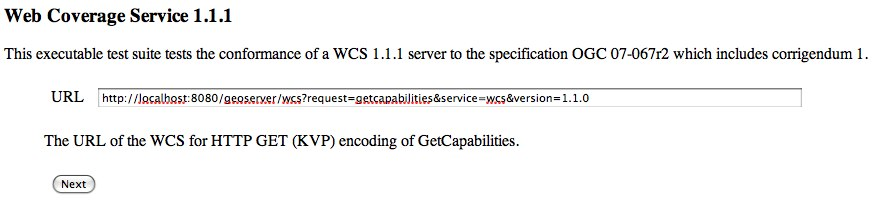
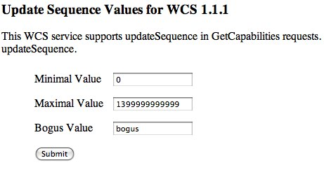

Cite Test Guide¶
A step by step guide to the GeoServer Compliance Interoperability Test Engine (CITE).
Contents
Check out CITE tools¶
The CITE tools are available at https://github.com/jdeolive/geoserver-cite-tools. The README file contains the most update documentation of how to checkout and build the tools. The quick version is:
git clone git://github.com/jdeolive/geoserver-cite-tools.git
cd geoserver-cite-tools
git submodule update --init
mvn clean install
Run WFS 1.0 tests¶
Note
Running WFS 1.0 tests require PostGIS to be installed on the system.
Create a PostGIS user named “cite”:
createuser cite
Create a PostGIS databased named “cite”, owned by the “cite” user:
createdb -T template_postgis -U cite cite
Change directory to the
citewfs-1.0data directory and execute the scriptcite_data.sql:psql -U cite cite < cite_data.sql
Start GeoServer with the
citewfs-1.0data directory. Example:cd <root of geoserver install> export GEOSERVER_DATA_DIR=<root of geoserver sources>/data/citewfs-1.0 ./bin/startup.sh
Change directory back to the cite tools and run the tests:
ant wfs-1.0
With the following parameters:
Capabilities URLAlltests included
Run WFS 1.1 tests¶
Note
Running WFS 1.1 tests require PostGIS to be installed on the system.
Create a PostGIS user named “cite”:
createuser cite
Create a PostGIS databased named “cite”, owned by the “cite” user:
createdb -T template_postgis -U cite cite
Change directory to the
citewfs-1.1data directory and execute the scriptdataset-sf0.sql:psql -U cite cite < dataset-sf0.sql
Start GeoServer with the
citewfs-1.1data directory. Example:cd <root of geoserver install> export GEOSERVER_DATA_DIR=<root of geoserver sources>/data/citewfs-1.1 ./bin/startup.sh
Change directory back to the cite tools and run the tests:
ant wfs-1.1
With the following parameters:
Capabilities URLSupported Conformance Classes:Ensure
WFS-Transactionis checkedEnsure
WFS-Xlinkis unchecked
GML Simple Features:SF-0
Run WMS 1.1 tests¶
Start GeoServer with the
citewms-1.1data directory.Change directory back to the cite tools and run the tests:
ant wms-1.1
With the following parameters:
Capabilities URLUpdateSequence Values:Ensure
Automaticis selected“2” for
value that is lexically higher“0” for
value that is lexically lower
Certification Profile:QUERYABLEOptional Tests:Ensure
Recommendation Supportis checkedEnsure
GML FeatureInfois checkedEnsure
Fees and Access Constraintsis checkedFor
BoundingBox ConstraintsensureEitheris selected
Click
OK
Run WCS 1.1 tests¶
Start GeoServer with the
citewcs-1.1data directory.Change directory back to the cite tools and run the tests:
ant wcs-1.1
With the following parameters:
Capabilities URL:
Click
NextAccept the default values and click
Submit
Run WCS 1.0 tests¶
Warning
The WCS specification does not allow a cite compliant WCS 1.0 and
1.1 version to co-exist. To successfully run the WCS 1.0 cite tests
the wms1_1-<VERSION>.jar must be removed from the geoserver
WEB-INF/lib directory.
Remove the
wcs1_1-<VERSION>.jarfromWEB-INF/libdirectory.Start GeoServer with the
citewcs-1.0data directory.Change directory back to the cite tools and run the tests:
ant wcs-1.0
With the following parameters:
Capabilities URL:MIME Header Setup: “image/tiff”Update Sequence Values:“2” for
value that is lexically higher“0” for
value that is lexically lower
Grid Resolutions:“0.1” for
RESX“0.1” for
RESY
Options:Ensure
Verify that the server supports XML encodingis checkedEnsure
Verify that the server supports range set axisis checked
Schemas:Ensure that
original schemasis selected
Click
OK
Teamengine Web Application¶
The Teamengine web application is useful for analyzing results of a test run. To run the web application execute:
ant webapp
From the cite tools checkout. Once started the web app will be available at:
To run on a different port pass the -Dengine.port system property to ant command.